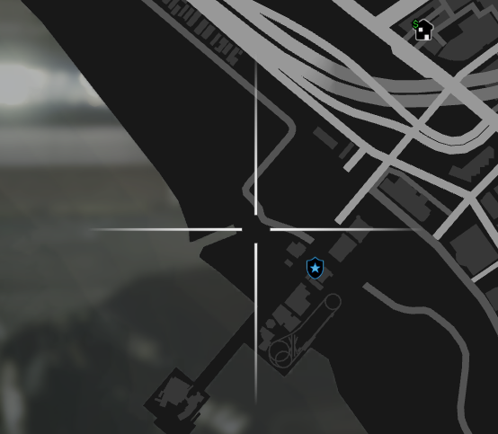
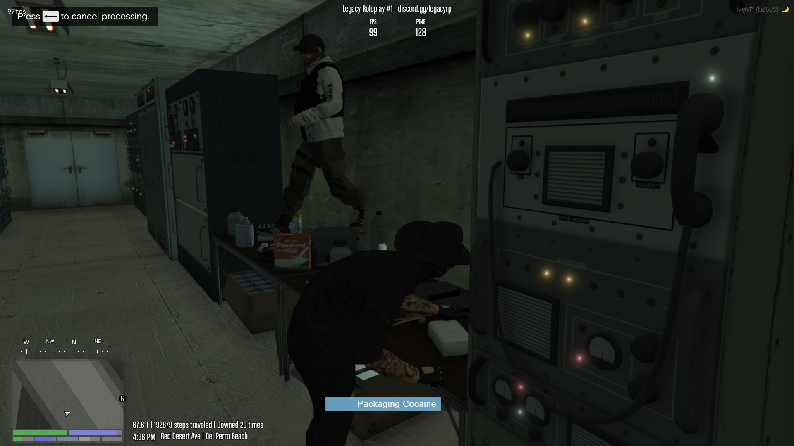

Turning cocaine bricks into bags is an essential if you want to be able to sell it and also not get caught with excessive amounts of cocaine on you.
1. Make sure you have a Cocaine Brick on you
2. Head over to the processing table
**The table can be found under the sand in the water canal tunnel by Vespucci Beach
Picture of the location on a map:

What you get from it:
- 1x Cocaine Brick turns into 8x Cocaine Bags
Where can it be sold?
- It can be sold on Vinewood Blvd to the tourists that are passing by
Picture of the table:

Once you got your drugs, enjoy! You can return to the main website with the button located at the top left. Or click here!